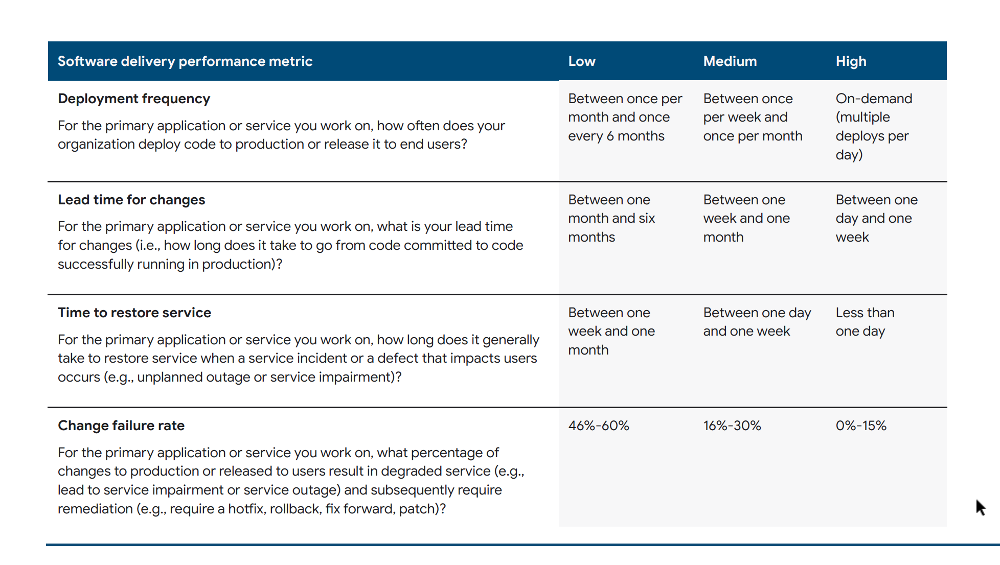
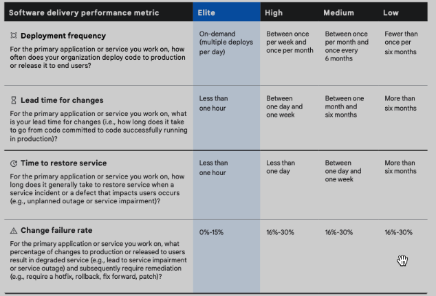
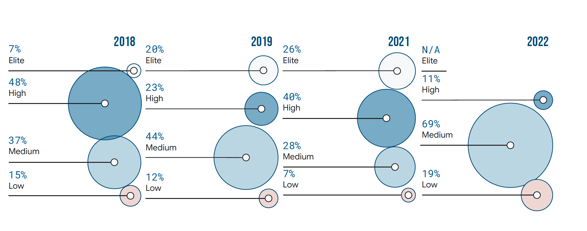
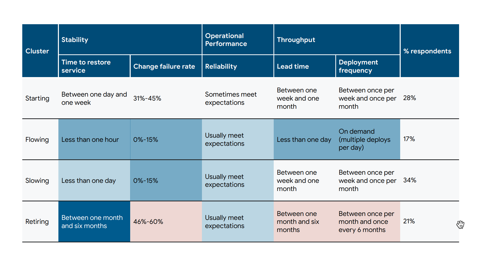
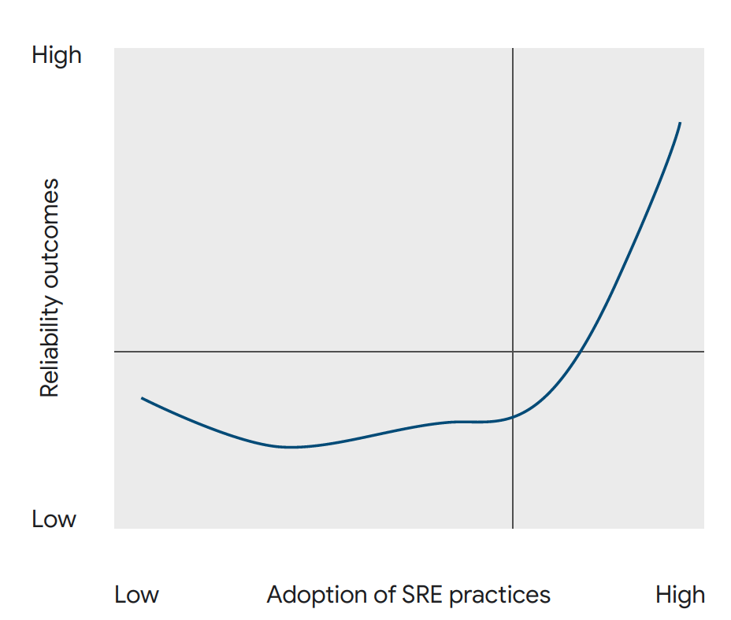
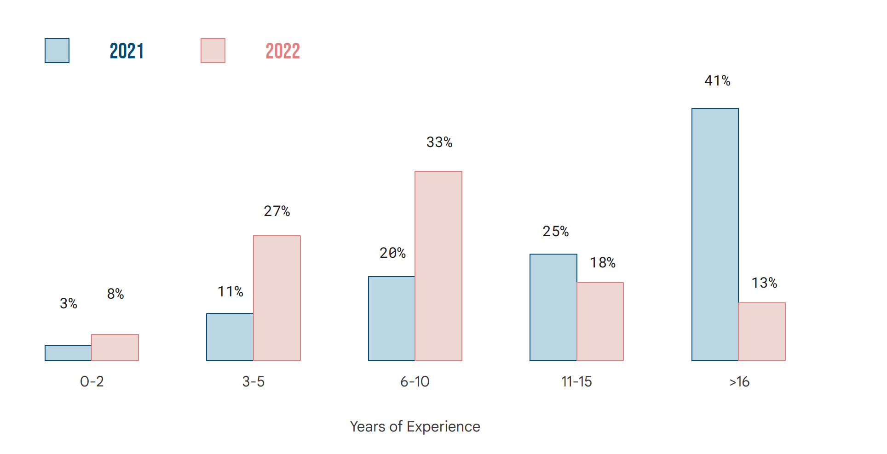

开篇叠 BUFF：
- 本解读纯个人向，水平有限，不构成任何建议 XD
- 如有出入，以原文为准
长求总
- 高交付效能仅在高 Operational Performance[1] 下，对组织效能有正面影响。
- 软件供应链安全很重要。在有良好 CI 实践的情况下实施供应链安全对交付效率有正面影响。
- 实施 SRE 对可靠性的影响是非线性的。有一个拐点在。在一个团队达到足够的 SRE 成熟度之前，感觉不到 SRE 对可靠性的积极性影响。
- 技术能力是相互依存的。同时实施 CI、CD、版本控制和松散耦合，会放大彼此能力，促进高水平的交付效率。
经典四大指标
如果读过往年的 State of DevOps Reports，可能会记得报告经典的四大指标，以及据此划分出的四大组织效能。但是在今年，除了传统的四大指标外，报告今年提出了新的 「交付和运维的五大指标」。
传统的四大指标部分也有变化：今年不再像往年一样再划分 「精英效能组织」。今年的「高效能」组织由去年的「高效能」和「精英效能」 合并而来。原因是小组认为今年即使是表现最好的群体的效能也没有明显到足够单开一组。

今年的指标整体上比去年要求更高了。以 Deployment frequency 举例，发布频次如果能做到一周一次到一月一次之间，已经能算高效能了，今年只能算中等效能。
 |
要求高了，评价分布也变了。现在大部分组织是落在「中等效能」区间中了：

五大新指标
今年 State of DevOps Reports 把一个 Operational Performance 这个新的指标纳入了评价。报告认为，如果一个组织在 Operational Performance 上没有足够可靠，提升其他指标意义不大。所以这部分一共是三大分类和五大指标：
- 吞吐量：包括发布频次和部署频率两个指标
- 稳定性：包括系统恢复时间和变更失败率两个指标
- Operational Performance：可靠性

据此也划分为四类：Starting、Flowing、Slowing 和 Retiring：
- Starting（创业组）：可能处于产品、功能和服务的起步阶段，每一项都平平无奇。他们可能更关注在快速获取用户反馈，了解他们产品跟市场的契合度上。
- Flowing（心流组）：在所有指标上表现良好。
- Slowing（缓慢组）：虽然部署和发布不频繁，但是稳定性很高。用户也比较满意。（大部分属于这种）
- Retiring（躺平组）：摆烂式支持一个对他们的客户仍有价值的系统。
组织不会长时间停留在某个类型中，会变化。例如，在产品的早期阶段，可能会倾向与创业组的状态。但是当他们找到了业务模式和定位后，会逐渐专项 Flowing 或 Slowing 的模式。
心流组在关注些什么
- 松散耦合：团队不需要依赖其他团队，就可以自己对系统做大规模修改。
- 工作灵活度
- 版本控制：代码、系统配置，应用配置的管理
- CI：代码合并到主干的频繁度
- CD：安全、可持续的交付
Slow 组真的慢吗
- Slow 组占比最高。大多来自大型公司；
- 相比其他组更不喜欢云
- 有成熟流程、期望给用户提稳定、有价值的体验。
- 绩效导向、
generative culture.
慢速集群的一个特点是 「低吞吐、高积极性」（low throughput and high positive-work-culture）
职业倦怠、组织绩效和计划外的工作
报告还研究了不同的组之间在职业倦怠、组织绩效和计划外工作上的差异，结果很有意思：
- 在组织绩效上，躺平组的表现优于其他组。心流组第二高。
- 心流组的职业倦怠、计划外工作是最低的。
- 心流组和缓慢组表明，只要可靠性做得好， DevOps 是有效的。
- 心流组通常来自小公司，历史包袱较少，DevOps 流程可以玩得很复杂。
如何改进
使用云
不多聊；
SRE and DevOps
报告今年着重讲了 SRE（软件可靠性工程）的重要性，以及在实施 SRE 过程中的 J 曲线：早期阶段要迎接很长一段时间的挫折，才能逐渐变好 
另外，SRE 的核心原则之一，是用户的感受才是可靠性的真正衡量标准，而不是系统指标。系统可靠性是要靠积极的团队推动的。
技术性的 DevOps 能力
简单来讲就是，用版本管理、CI、CD 用起来；架构要松散耦合。以及主干研发。
但是报告对主干研发发现了一些情况。比如，对于经验较少的开发者来说，使用主干研发反而会导致整体交付效率下降、更多的非计划工作，并且更容易出错，以及更高的变更失败率；
但是对于经验丰富的开发者来说，使用主干研发在这些指标上都会变得更好。
可能的原因是，实施主干研发需要更多的门槛和经验。需要良好的研发习惯以及完善的 CI、CD；否则就要痛苦面具了。
对于 CD，报告有一些额外的发现比较有意思。比如使用 CD 会带来更多的计划外工作。可能是因为反馈链路变短了，一些事情可能是由上一次 CD 的反馈驱动的，而不是原本计划的。
又比如，有证据表明，与只采用 CD 的团队相比，那些同时采用松散耦合架构和 CD 的团队，其预期的错误发生率比平均水平要高 43%（即产品中断、安全漏洞和他们的服务发生重大性能下降）。
供应链安全
这部分提出了供应链安全相关的两项倡议： Supply Chain Levels for Software Artifacts (SLSA) 和 NIST Secure Software Development Framework (SSDF) 。
随着世界政治局势混乱的加剧，供应链安全确实越发重要。去年 npm 就有很多起供应链投毒事件。
而在持续集成做得好的情况下，实施供应链安全，对交付效率是有正面意义的。但值得注意的是，如果没有完善的持续集成流程，供应链安全的实施对交付效率可能会发生冲突。
Surprises
今年的报告相比以往，多了一些不寻常的点：
1. 主干研发的评价发生变化
往年的报告都体现出了主干研发的积极作用，今年这一情况有改变，跟往年都很不一样。报告没有给出解读，这点可能需要业界再深挖一下。阿里和蚂蚁都在提主干研发。可能需要辩证思考一下。
2. 只有当 Operational Performance 足够高时，软件交付效能才有利于组织效能
3. 文档实践对软件交付效能产生负面影响
与往年的报告也不一致。可能是因为文档工作在越来越自动化。报告表示当前证据不足以支持或者否定这个观点。可能只是一个观察。
4. CI、CD 和主干研发可能带来更高的倦怠
可能是因为今年报告的受访者，多处于早期职业生涯，他们更多属于这些技术的实施者。之前更多的是在调研这些技术的倡议者或者监督者。他们的观点会有不一样。报告会进一步研究这个趋势，期待明年。 
5. SRE 的实施对交付效能有负面影响
不一定代表因果性。报告认为，稳定性和交付性可能是脱钩的，组织可能会选择侧重其中一个。但是最终，为了让 2 能成立，一定要保证可靠性。
6. 供应链安全很重要
we were surprised to see that security practices were actually the mechanism through which technical capabilities impacted softwaredelivery performance and organizational performance.
总结
个人觉得今年的报告最亮眼的部分，是把以往基于经典四大指标的 Elite、High、Medium 和 Low 的评价体系升级成了新的五大指标，并且做了新的分组和和画像。往年的报告虽然没有明说「快即是好」，但是字里行间都有在做这个评价。今年划分的四种组织类型反而更合理：初创期的组织的关注点在快速试错上，所以各部分可能要求并不会那么高；而心流组和缓慢组之间，并没有绝对意义上的好坏，最适合的就是最好的。
把可靠性加入评价指标是更合理的。如果无法为用户提供可靠的体验，单纯瞄着交付效率去提高，并无太大意义。
还有值得注意的点，是样本更年轻了。也许是这些更年轻的声音，导致了报告里的一些跟往年不太一样的声音出现。例如主干研发、CI、CD 这些 DevOps 概念，大家都在说好，都要做，但是事实上他们真的有效吗，混合使用这些实践会产生什么样的事情，对整体效能是好是差，报告今年尝试调研并解读了一下，有一些新发现。可能也可以思考一下。
REFERENCES
[1] Operational Performance：标准翻译是运营绩效。运营绩效可以解释为公司各个部门之间的协同作用以及共同产生更大产出的能力。包括交付速度、质量、灵活性、可靠性等等。
此处原文包含 file 内容。
此处原文包含 bookmarkInline 内容。